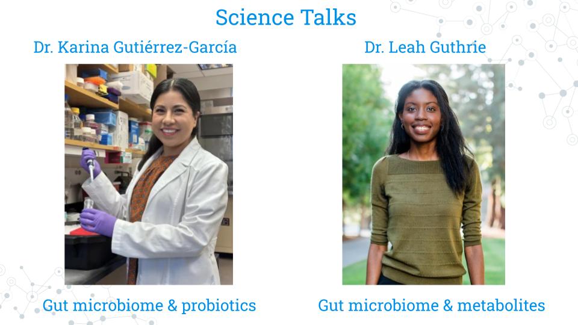

7.3 Science Talks
Science Talks feature a guest lecturer to showcase their research work, share their scientific journety and engage in Q and A with the students. It is a one of a kind opportunity for students to engage with a scientific scholar and/or expert from across departments, fields, and career stages and explore, broaden or narrow students’ scientific interests.
The two invited speakers for the Microbial Mysteries CURE Spring 2025 at the JHU were:
- Dr. Karina Gutiérrez-García
- Dr. Leah Guthrie

For each speaker, students were asked to prepare by completing the Science Talks Activities.
7.3.1 Science Talks - Activity 1
Estimated time: 50 min
- Read/Browse the following information about Dr. Karina Gutiérrez-García
Postdoc Spotlight carnegiescience.edu/news/postdoc-spotlight-karina-gutierrez-garcia
“Home sweet home” perspective on study of fruit fly gut microbiome pubmed.gov/39637006
Abstract for “A conserved bacterial genetic basis for commensal-host specificity” pubmed.gov/39636981
Abstract for “Gut microbiomes of cycad-feeding insects tolerant to β-methylamino-L-alanine (BMAA) are rich in siderophore biosynthesis pubmed.gov/37993724
Post three questions to the speaker in the Discussion Forum at https://help.c-moor.org/t/469.
Science – What scientific question do you have about Speaker’s research, ranging from basic background questions to possible next steps?
Method – What methods would you like the Speaker insight on, whether computational, genomics, or other exciting technologies?
Career – What advice would you ask the Speaker for regarding how to get started, finding a mentor, etc.?
7.3.2 Science Talks - Activity 2
Estimated time: 50 min
- Read/Browse the following information about Dr. Leah Guthrie
Faculty focus qb3.berkeley.edu/news/faculty-focus-leah-guthrie
Abstract for “Impact of a 7-day homogeneous diet on interpersonal variation in human gut microbiomes and metabolomes” pubmed.gov/35643079
Abstract for “Human microbiome signatures of differential colorectal cancer drug metabolism” pubmed.gov/29104759
Post three questions to the speaker in the Discussion Forum at https://help.c-moor.org/t/469.
Science – What scientific question do you have about Speaker’s research, ranging from basic background questions to possible next steps?
Method – What methods would you like the Speaker insight on, whether computational, genomics, or other exciting technologies?
Career – What advice would you ask the Speaker for regarding how to get started, finding a mentor, etc.?